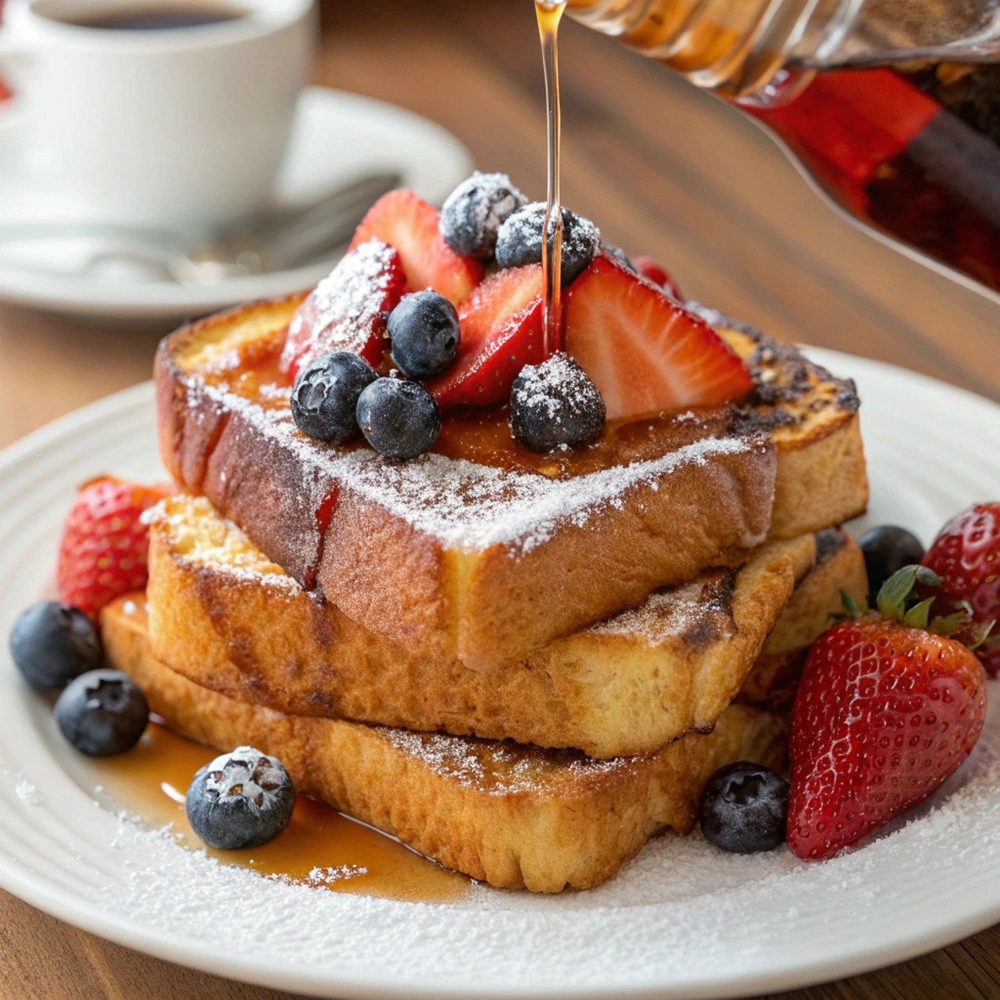

French Toast

Home
Description
This is the best French toast recipe. It's different because it uses flour. I have given it to some friends and they've all liked it better than the French toast they usually make! This fluffy French toast recipe is crisp on the outside, but perfectly soft and tender on the inside.
Ingredients
- 1/4 cup flour
- 1 cup milk
- 3 large eggs
- 1 tablespoon white sugar
- 1 teaspoon vanilla Extract
- 1/2 teaspoon ground cinnamon
- 12 slices of bread
Steps
- Gather all ingredients.
- Place flour into a large mixing bowl; slowly whisk in milk until smooth. Whisk in eggs, sugar, vanilla, and cinnamon until well combined.
- Heat a lightly oiled griddle or frying pan over medium heat. Meanwhile, soak bread slices in milk mixture until saturated.
- Working in batches, cook bread on the preheated griddle or pan until golden brown on both sides, about 2 minutes per side.
- Serve hot and enjoy.